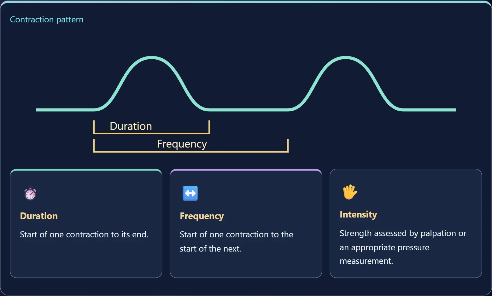
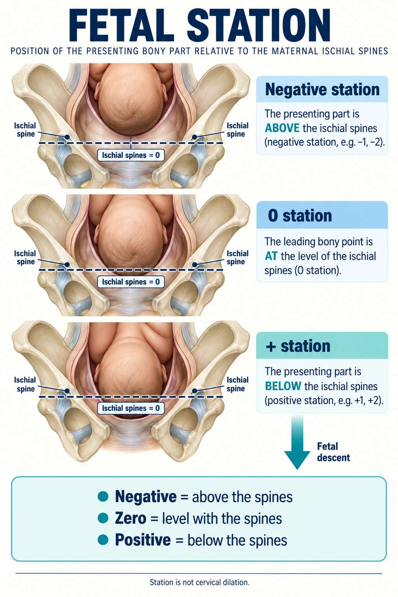

🧘 Labor — the 5 Ps, true vs false, and the four stages
One picture for how a contraction is measured, one for where the baby is, and the four stages in the order you will be asked about them.
🏁 Also on this topic: The Stages of Labor (NG-324) — what happens in each stage and the nursing priority that changes at every transition. This page is the 5 Ps, true vs false labor, contractions and station.
⭐ The one idea
Cervical change is what makes labor real. Not how much it hurts, not how often the contractions come — dilation and effacement. Everything else on this page is a way of describing or supporting that change.
🧮 The 5 Ps — what labor needs to go well
👶 Passenger
The fetus — its size, lie, presentation, attitude and position. A well-flexed vertex presentation passes most easily.
🧿 Passageway
The bony pelvis and soft tissues. A gynecoid pelvis is the most favorable shape.
⚡ Powers
The contractions (involuntary, primary power) plus maternal pushing in the second stage (voluntary, secondary power).
🏃 Position
The mother’s position. Upright and side-lying use gravity and open the pelvis; flat on the back does neither.
🧠 Psyche
Fear and exhaustion raise catecholamines, which slow labor. Support, information and rest are clinical interventions, not niceties.
🖼️ Passenger and passageway — in pictures
The 5 Ps above, drawn. Start with the one-page plate, then each idea on its own.
![Fetal positions and presentations with labeled pelvic illustrations, common abbreviations, and implications for labor and birth. Head and face positions: right and left occiput anterior, transverse and posterior, and right and left mentum anterior and right mentum posterior, with what each means for labor. Breech and shoulder presentations: (a) frank breech, (b) complete breech, (c) footling breech with higher cord-prolapse risk, (d) shoulder from a transverse lie. Breech at term: ECV may be offered around 36 to 37 weeks.](../img/infographics/fetal-positions-presentations-v2.webp)
Swipe it sideways if it is cut off, or tap to open it full size.
📊 How a contraction is measured
Three numbers get charted, and they are measured from different points. This is the picture worth memorizing.

🖼️ Open readable diagram & course labelsReadable study notes and sources
- Duration: start to end of one contraction.
- Frequency: onset of one contraction to onset of the next.
- Intensity means strength; an external tracing does not reliably quantify it.
Sources checked October 3, 2026:
| Number | Measured from | Units |
|---|---|---|
| Frequency | Start of one contraction to the start of the next | minutes |
| Duration | Start to end of the same contraction | seconds |
| Intensity | Strength at the peak — palpation, or mmHg with an internal catheter | mild / mod / strong |
| Resting tone | The uterus between contractions | soft |
🚨 Never let this slide
A contraction lasting longer than 90 seconds, contractions closer than 2 minutes, or a uterus that does not relax between them is tachysystole. Blood reaches the placenta only during the rest period — no rest, no oxygen.
Do first: stop the oxytocin, turn her to her side, give oxygen and a fluid bolus, and call the provider.
✅ True labor vs false labor
| TRUE labor | FALSE labor (Braxton Hicks) | |
|---|---|---|
| Contractions | Regular, and they get closer, longer and stronger | Irregular; they do not build |
| Felt where | Back, radiating around to the abdomen | Abdomen and groin only |
| Walking | Makes them stronger | Often makes them stop |
| Cervix | Dilates and effaces | No change |
| Show | Bloody show is common | Usually none |
The cervix is the tiebreaker. Everything above it can be argued; cervical change cannot.
🏠 What to do for false labor
Rest, hydrate, change position, reassess. Dehydration alone can set off irritable contractions, so a glass of water and a walk are real interventions.
Teach her when to come in: contractions 5 minutes apart, lasting 1 minute, for 1 hour — and immediately for ruptured membranes, bleeding, or reduced fetal movement.
📏 Station — where the baby actually is
Station is the presenting part measured against the ischial spines. Minus is above them, plus is below, and 0 means engaged — that is how the exams key it. Strictly the two are defined separately: station is where the presenting part sits against the spines, and engagement is the widest diameter having passed the pelvic inlet, which usually lands at about station 0.

Readable study notes and sources
- Station describes the presenting bony part relative to the maternal ischial spines.
- Negative station is above the spines; zero is at the spines; positive is below.
- Station describes descent. It is not the cervical dilation measurement.
Sources checked October 3, 2026:
![Read a cervical exam written as 3 / 25 / minus 2. Dilation, how wide: the width of the cervical opening in centimeters, 0 to 10, shown as a 3 cm ring and a 10 cm complete ring. Effacement, how thin: the percentage of thinning and shortening, 0 percent long, 50 percent shorter, 100 percent fully thinned. Station, how low: the lowest bony part of the presenting part relative to the ischial spines, which are 0; negative above, positive below; minus 2 is 2 cm above the spines. So 3 cm open, 25 percent effaced, presenting part 2 cm above the spines. Wide, thin, low. One exam describes a moment; serial exams show progress.](../img/infographics/maternity-cervical-exam.webp)
Why it matters: a presenting part that is still high (−3 or above) when the membranes rupture is the setup for cord prolapse.
🕑 The four stages, in order
First stage — onset of true labor to full dilation
The long one. It ends at 10 cm, not at the urge to push.
| Phase | Dilation | Contractions | What she is like |
|---|---|---|---|
| Latent | 0–5 cm | Mild, every 5–10 min | Talkative, excited, can walk |
| Active | 6–10 cm | Moderate to strong, every 2–5 min | Inward, focused, wants help |
| Transition | 8–10 cm | Strong, every 2–3 min | Irritable, nauseated, shaky, “I can’t do this” |
Transition is the shortest phase and the one she remembers. Saying “this is transition, it means you are nearly there” is genuinely useful nursing.
Second stage — full dilation to the birth of the baby
Pushing. Contractions every 2–3 min, lasting 60–90 s.
Watch: the fetal heart rate with pushing, the perineum, and her energy. Support: upright or side-lying positions, and let her push with the urge rather than to a count.
Third stage — birth of the baby to delivery of the placenta
Usually 5–30 minutes. Three signs the placenta has separated:
- A sudden gush of blood
- The cord lengthens at the introitus
- The uterus becomes firm and globular and rises
Never pull on the cord to hurry it. That is how you get a uterine inversion.
Fourth stage — the first 1 to 4 hours after the placenta
Recovery, and the highest-risk window for hemorrhage.
Assess every 15 minutes for the first hour: fundus (firm, midline, at or below the umbilicus), lochia, blood pressure and pulse, and the bladder.
🚨 The never-do rules
- Never leave a woman alone once she is in active labor or after the membranes rupture.
- Never check the cervix if she is bleeding and previa has not been ruled out.
- Never pull on the umbilical cord to deliver the placenta.
- Never leave the fundus unmassaged when it is boggy.
- Never put her flat on her back — it compresses the vena cava. Wedge or turn her.